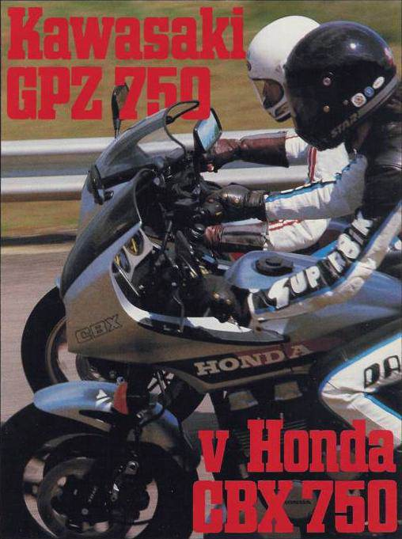
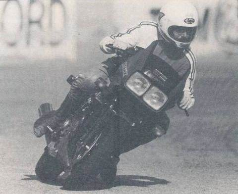
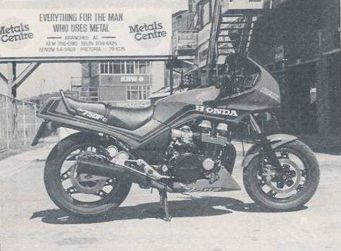

One small step back for Honda, but a big step forward for the rest of us.

A Honda with character? Incredible as it may seem, the new CBX750F actually qualifies for this plaudit. With all due respect to Honda, a goodly proportion of their pre-‘84 model range had about as much raunchy appeal as a bus ticket. In the same way that you might associate Harley-Davidsons with Motorhead, the average Honda would naturally bring Cliff Richard to mind. There wasn’t anything actually wrong with Hondas (with one or two well-known exceptions, of course); they were just, well, a bit antiseptic.
But maybe things are changing. Although we are yet to ride most of the new generation Honda sports bikes in this country, early signs are encouraging. John Cutts came back from South Africa (see page 12) enthusiastic about the sheer speed available to Honda owners this year; he was also favourably impressed by the handling ability of the CBX750, an ability which allowed it to keep pace with the monster V4 thousands on all but the flattest of flat-out blinds.
Conditions are different over here. The roads are congested with police and punters, making it difficult for motorcyclists to give full rein to anything much above 650cc. Power, whilst briefly thrilling, is often less important than manoeuvrability. Combine the two in equal measure, though, and you’re coming close to perfection.
The CBX750F comes closer to perfection than most. It is certainly the best 750cc road bike we’ve tested, and probably the best ever. Honda’s own VF750F is often talked about in these terms (although never by this magazine), but as an all- round owning proposition the CBX scoops the pool.
At this juncture it’s useful to look at the reasoning behind Honda’s decision to have two completely different machines in the 750cc class. To quote from their own press release, the CBX750F is “designed to appeal to both those riders who prefer the ‘classic’ Honda big bike engine – an in-Iine four stroke four – and those who abhor maintenance but do not wish to sacrifice sports styling or performance”. That’s the nearest you’ll get to an admission that the V4 750 is quite complicated in the engine department, but apart from that, Honda are known to be a little peeved about the fact that people are still buying in-Iine 750 fours from Kawasaki and Suzuki as well as their own V4. The CBX is their answer.
The heart of the matter is the engine, related to the original CB750 inasmuch as it has the same number of cylinders arranged in the same transverse format. In most other respects they’re as different as chalk and blancmange. The main difference is the quoted power output for each bike; the original 1969 single-cam 750 claimed 67bhp, whereas now Honda are talking about 91 bhp. And judging from our dyno test, that’s no idle boast. More of that later.
Compactness is the key with this new lump. Long steps have been taken to trim external dimensions down in every plane (width, height and length). Width has been reduced at the bottom of the engine by the now familiar method of switching the high-output alternator to a new position atop the gearbox, where it is driven by a chain from the centre of the crankshaft. Height is lost by the rather more novel method of reducing the depth of the sump; total oil capacity is actually increased, however, by using the front frame tubes as supplementary sumpettes. The advantages of this system are that not only does it allow the top-heavy engine to sit lower in the frame for better handling, it also provides more surface area for oil cooling. Length is trimmed by cutting out the middle man, in this case the usual form of intermediate power take-off between the crank and the clutch, the jackshaft. Instead, the inside counterweight for number 4 cylinder takes the form of a gearwheel which drives the clutch direct; very neat. The crank itself runs on plain bearings, and compared to the VF750 is positively long-stroke at 53mm (bore is 67mm). The VF’s bore and stroke dimensions, at 70 × 48.6mm, make it one of the most oversquare motors ever, so although the CBX is almost conservative by comparison, it is still more oversquare than the 66 × 54mm Kawasaki. Built to rev, the four-valve head exhausts into a four-into-two system, which includes a balance pipe; in contrast to the torque-biased crossover system featured on the CBX550, the 750 pipery is arranged in the classic high-horsepower pattern.
It’s at the top end of the engine where Honda have lobbed in the biggest handful of magic dust. The camshafts themselves are hollow for lightness, and the camminess of the engine is apparent as soon as it springs into life, with the kind of soft metallic clicking normally heard only on radically-tuned machinery. Four valves, laid out conventionally rather than in the radial RFVC pattern, are operated by hydraulic tappets. By no means a new idea – Harley-Davidson have used them since the year dot – these tappets maintain zero valve clearance with no requirement on the owner for adjustments of any kind. It will be interesting to see how well the tiny springs inside the plunger chambers stand up to hard use over a long period.
Meantime, the hydraulic system minimises the strain put on the valve stems by virtue of the fact that the stem tips won’t be clobbered from a distance, as they would have been in a normal bucket and shim system that was slightly out of adjustment. Honda have taken advantage of this feature by using valves with much thinner and lighter stems, making for less reciprocating weight. Flat-topped pistons and 34mm CV carbs complete the mechanical specification.
What does it all add up to? In the case of our test bike, it added up to 83.1 hp at the rear wheel at 8662rpm, about right in the light of average transmission losses of around 7hp. Compared to the Kawasaki, the CBX produced more power between 3600 and 4500rpm; it lost out slightly between 4500 and 5000rpm, only to recover its advantage between 5500 and 7000rpm. After 7000rpm, the Honda pulled out a considerable horsepower advantage up to 9000rpm, whereupon the gap narrowed down again to nothing.

On the road, this means a true top speed of 135mph for the Honda. On a good day a couple more mph could be squeezed out, but CBX owners expecting speeds in the mid 140’s (as quoted elsewhere) should be forewarned that that was very much a freak figure. The CBX’s extra cog means that it is higher geared in top than the Kawasaki, but that also means that once past the power peak, performance falls off more rapidly too. The GPz is able to churn out within 3hp of its maximum output at any point of the rev range between 8 and 10,000rpm, making it an easier proposition to maintain high speeds in changing conditions. A rev-Iimiter cuts ignition to two of the Honda’s cylinders after 10 800rpm; no bad thing given the lack of engine vibration at almost any speed to warn of impending disaster.
One surprise with the Honda was its exhaust note, which despite being most agreeably sporty actually managed to pass the EEC Type 2 noise test, recording 1 dB under the limit at 85 decibels. Just shows what you can do if you try, although we still thinks it’s a dumb law. Gear selection on the CBX is also first class, real knife-through-butter stuff with just an occasional reluctance to engage first from a standstill. The six ratios are well chosen and beautifully close, just as well really because if there is a weak link in the CBX it’s the two-stroke power delivery characteristics which are more obvious on the road than the dyno. Fortunately, it’s a peakiness weighted in favour of extra zip at the top end on top of an already impressive low end curve; still, the word “gutless” is difficult to avoid. The superbly light hydraulic clutch embodies a trick split action to reduce backlash during downchanges, and it does seem to work – at speed, anyway. Around town it feels pretty sloppy, and the absence of engine braking can make rev synchronisation between gears somewhat tricky, leading in turn to fairly rapid and noticeable chain stretch during our two-week test. As an aside, the rubber trim on the rear sprocket guard stripped itself off during our dyno runs, but since it appears to have no obvious purpose we did not feel its loss. While on the subject of tat, everyone who saw the dummy plastic bell mouths on the two end carburettors had the same reaction; amazement, swiftly followed by ridicule. The concept is utterly daft, but dafter still is the fact that from a distance of ten yards they actually do enhance the bike’s image. Silly, but true.
Getting back into the real world, there’s no denying that the CBX is one sharp handling scoot. Much of the credit goes to the front end, which rivals that of the GPz900R for sweetness of character. The forks are meaty 39mm tubes, with TRAC brake torque-activated anti-dive and a three-position rebound damping switch. There isn’t much to choose between the four TRAC positions in terms of feel when riding on public roads, but there are noticeable differences between the three damping positions.
The front tyre, a 110/90, is much narrower than the 120/80 on theVF750F, and for our money infinitely nicer in terms of steering response. Although we weren’t keen on the VF’s 16-inch wheel, that on the CBX feels just right, being considerably less twitchy under braking. Steering is excellent, ultra-quick and very neutral, but not at the cost of high-speed stability, which is also excellent. The CBX scores heavily over the Kawasaki in this respect, and as a bonus we reckon that the 16/18-inch wheel combination gives the Honda a mean and purposeful stance on the road. Little points like that sell bikes.
We had no problems whatsoever with either handling or roadholding during our time with the CBX. The bike just goes where you point it and sticks hard to the road at all times. Immediately after collecting the bike from Chiswick we hit a real cloudburst; Chiswick roundabout is no place to be at five in the afternoon in weather like that, but the Honda handled the situation with aplomb. The rear suspension has a too-short air nozzle behind the sidepanel for preload adjustment, and a kind of choke cable affair out in the open down by the pillion’s leg for damping; depending on how much air you’re running, the damping control becomes more or less useful. In practice we left it all on the midway settings; they’re as good as any for solo riding.
The frame with its large diameter spine tube is nicely rigid, the 110mph weave so typical of many big bikes these days being conspicuous by its absence. Honda are now using computers to help them design their frames; different load and ride conditions can be applied to a graphic frame simulation, thus doing away with the need to construct expensive frame prototypes. On the CBX, the computer has added a bit of vertical height to the main chassis so as to allow greater in situ access to the engine. Head, block and pistons can all be removed once the petrol tank and coils are off.
Beautifully flickable for a bike of this class, the CBX doesn’t have quite the ground clearance of a Kawasaki GPz900R, but it is nevertheless more than ample for all but the looniest of riders. The metal studs underneath the footpegs are first to touch down on smooth tarmac. With exactly the same dry weight as the VF (480lb), braking on the CBX is equally fierce. Luckily, the CBX front brakes offer more feedback and control, allowing them to be used harder and with greater safety. In fact, it’s possible to dispense with the back disc entirely – just as well, because it’s both dead in feel and very powerful, a dodgy combination at the best of times.
Ergonomically, Honda are now pretty much in the vanguard, particularly where minor controls are concerned. All the switchgear operates with a precision already well known to owners of Japanese and the best European cars. We were interested to note that the indicators are not self-cancelling, but rather need an extra prod to stop them. Given the mind-boggling complexity of most of the automatic cancelling systems we’ve sampled previously, none of which appear to work very well, we approve of this return to manual sanity, at least until such time as a decent auto system comes along.
The CBX fairing works well, wrapping the rider in a pocket of still air at three figure speeds. It is also nicely finished, and splits into sections so that crash damage expenses can be kept down. Inside the fairing are three main instruments, with glass faces angled in to face the rider, an arrangement that is only found wanting when the sun is high or behind, whereupon you are confronted with three mirror images of your own head. Depending on the head, this can be a shocking experience. The horn is definitely poxy, and totally inadequate for the performance of the bike.

On the other hand, Honda have always made a point of endowing their machines with good lighting, and the CBX is no exception. In fact, it sets a new standard for motorcycles; both headlamps work on dip as well as main, a feature that certainly grabs the attention of other roadusers. Main beam is of the neck-tanning variety. Provision has also been made for the attachment of bungee straps, although the seat itself is fiddly to re-fit after removal. By the end of the test something had gone horribly wrong with the seat lock, nearly causing the bike to be immobilised with the ignition key first becoming stuck in the lock and then showing itself to be disturbingly bend-prone. As a bum perch, the seat is too hard and narrow for long trips to be made in comfort. We’ve noticed a downgrading in seat quality on many of the new sports Hondas; they really are rather cheap and nasty, which wouldn’t be so bad in itself if it wasn’t for the fact that replacements cost so much. The one for the VF1000F is little more than a bit of sponge stretched over a plastic base with a piece of vinyl stapled over the top. That costs £155. The CBX version costs £174. Both are too much.
The only factor that might hold the CBX750 back in the 750 marketplace is its high asking price of £2880. Everything else is right, more or less. Every Honda owner who saw it was visibly salivating, while even hard-bitten devotees of other makes who would normally not be seen dead on a Honda were often caught eyeing it up in a covetous sort of way. It’s a lovely tool. I wonder if they’ll make a 1000cc version? Now that would be something.
SECOND OPINION
Before unloading the GPz, I took the opportunity to ride both bikes back-to-back for comparison. The results were a mixed bag. Around town and country, the CBX steers, responds and handles better than the GPz but the narrowly concentrated power output (8000rpm and upwards) means constant keep-it-on-the-boil cog swapping which soon becomes a chore. The GPz makes broader, more comfortable power and is less thirsty. The Honda makes more outright power and has a better top speed. Both bikes handle well at speed and both are very stable. The Honda’s front-end is better, though, and the Kawa scores lower on creature comforts.
On the track where rider input tends to be more dramatic and speeds are much increased, the GPzs all-round ability is much improved. It also brakes better (ho hum). As a track tool, I’d take the GPz. For road work, I think I’d give the nod to the CBX which is oh so easy to ride. However, I’ve no doubts that the CBX is the best in-Iine 750 Honda have ever made. In nearly 15 years of trying (I never really rated any of the CB incarnations) that alone says a lot. JC
HONDA CBX750F
£2880 (including all taxes)
PERFORMANCE
Top Speed 135mph
Fuel Consumption – Hard Riding 37.9mpg
Cruising 43mpg
POWERTRAIN
Air-cooled DOHC 16-valve transverse four with hydraulic tappets.
Capacity 747cc
Max power {claimed} 91 PS at 9500rpm.
Max torque {claimed} 5135ft/lb at 8500rpm
Bore & stroke 67 × 53mm
Compression ratio 9.31
Induction by 4 × 34mmCVcarbs.
Transistorised pointless ignition with electronic advance.
Exhaust four into two with balance pipe.
Wet sump/oil in frame lubrication.
Wet multiplate “one-way” clutch.
Direct drive to clutch via counterweight gear pinion.
Final drive by O-ring sealed chain.
Six-speed transmission.
CHASSIS
Duplex cradle frame, tele forks with TRAC anti-dive, air preload and three-way damping adjustment
Pro-Link monoshock rear with remote three way damping adjustment and air preload.
Triple disc brakes with twin-piston calipers.
57.7in wheelbase,
5.7in ground clearance,
31.3in seat height.
Dry weight 4801b.
Tyres 110/90V16 front, 130/80V18 rear
PARTS BIN
HONDA CBX750F
All prices include VAT
Fairing (complete inc screen) £509.44,
indicator assembly £13.60 front, £14.62 rear,
forks (complete less yokes) £512.41,
indicator lens £10.32,
front mudguard £53.90,
wheel £177.17,
tank £153.96,
seat £173.90,
silencer £113.16,
gearlever £10.62,
brake pedal £26.98,
headlamp £38.33,
brake/clutch lever £3.99,
sidepanel £42.28,
engine side cover £18.92,
piston £15.37,
conrod £53.94,
head gasket £21.45,
crankshaft £482.98,
igniter unit £128.76,
drive chain £49.15,
sprocket £9.26 (front) £19.27 (rear),
oil filter £5.00,
battery £23.91.
SuperBike Magazine – July 1984